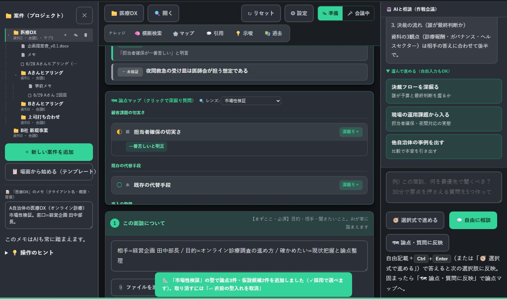

問い合わせ対応・予約受付・ホームページ、見積やメール、自社様式の書類。散らばった業務を整理して、あなたにちょうどの仕組みに。既製ソフトに業務を合わせるのではなく、AIで早く・安くつくります。
専用ツールの費用
数百万円→数万円〜
規模に応じて個別見積
見積・書類の作成
2〜3時間→20分
※想定 テンプレート＋AI補完で
月次の報告書づくり
2日→3時間
※想定 議事録から自動生成
01
業務を整理する
どの作業に時間がかかっているのかを一緒に洗い出し、AIに任せられるところ・人がやるべきところを分けます。まずここからで構いません。
02

専用のツールをつくる
問い合わせ・予約の受付、見積や報告書づくり、ホームページ。既製品に合わせず、あなたの業務にちょうどの形で用意します。
（写真：実際に制作したヒアリング支援ツール）
実現の手段は、業務に合わせて選びます
- テンプレート整備（議事録・報告書・案内文）
- 入力・集計の自動化（フォーム・表計算の連携）
- 簡易データベース・管理画面
- ウェブサイト・ウェブページの制作
- LINE公式アカウントでの問い合わせ・案内
- 業務アプリの開発
お客様が選ぶものではなく、お聞きした業務に応じてこちらで使い分ける道具です。手段は今後も増えていきます。
いまお見せできる実測値は、代表自身の業務です。同じやり方を、あなたの業務にも。
調査業務を、AIエージェントで自動化した。
週10時間→週3時間70%削減
Tool ― ヒアリング支援ツール（自社開発）
3段階に分けています。まず業務を整理し、1つだけ変えてみて、必要な会社だけ続ける。順番に進めても、途中でやめても構いません。
業務を整理する60〜90分の業務棚卸し診断
いまの業務を一緒に洗い出し、AIで楽になる部分・手をつけない方がよい部分を切り分けます。最初の一手が決まります。
1〜2万円／ 1回
改善できる業務をご提示できなければ、全額返金します。
まず1つ変える1業務の改善
見積書・議事録・報告書・案内文など、いま一番時間を取られている1業務を、実際に使える形にします。
3〜8万円／ 1業務
必要な会社だけ続ける月次伴走サポート
チャットでの随時相談＋月1〜2回のオンラインMTG＋軽微な改善。続けるかどうかは、成果を見てから決めていただけます。
1.5〜3万円／ 月
保証初回診断は、改善できる業務をご提示できなければ全額返金します。リスクを負うのは AI実装Lab 側です。
上限月次サポートは品質維持のため、同時5社までとしています。空き状況はお問い合わせください。
料金はいずれも目安です。実際の料金は、業務の内容と規模をお聞きしてからご提示します。もっと大きな「専用システム」（複数業務をつなぐしくみ、ウェブ・アプリ開発など）も、規模に応じて個別にお見積りします。
| 大手コンサル | 受託開発・SES | AI実装Lab | |
|---|---|---|---|
| 実装（コードを書く） | × | ○ | ○ |
| 業務そのものの理解 | ○ | △ | ○7年の実務経験 |
| 支援の終わり方 | 提案書を渡して終了 | 納品・検収で終了 | 使われて成果が出るまで。最終的に自走できる状態まで |
相談だけでも歓迎です。提案・営業は一切しません。伴走の出口は、自走です。

Shu Suzuki ― Numazu
鈴木 秀代表 ／ 沼津
行政・政策・法人運営の現場を経て、いまはAIで業務を整理・自動化する仕事をしています。提案書を渡して終わりでも、言われたものを作るだけでもなく、聞いて・形にして・現場で回るところまで。相談から実装まで、私がひとりで担当します。
外部AIサービスの明示
利用する外部AIサービス（API）を事前に明示し、ご合意のうえで利用します。
秘密保持契約（NDA）に対応
ご希望に応じてNDAを締結し、事業情報は厳重に取り扱います。
データの保存・削除方針
お預かりしたデータの保存範囲・削除方針を、作業前に取り決めます。
ITやAIに詳しくないのですが、大丈夫ですか？
静岡県東部以外でも対応できますか？
会社のデータを外部のAIに渡すのが不安です。
相談したら、契約を勧められませんか？
途中でやめることはできますか？
「何から始めればいいか分からない」状態で構いません。
いま面倒だと感じている業務を、30分お聞かせください。
写真：沼津の風景・制作物の画面は当方撮影／制作。一部の写真素材は StockSnap.io（CC0）。